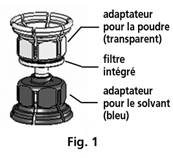

RÉSUMÉ DES CARACTÉRISTIQUES DU PRODUIT
ANSM - Mis à jour le : 27/03/2014
1. DENOMINATION DU MEDICAMENT
OCTAFIX 100 UI/ml, poudre et solvant pour solution injectable
2. COMPOSITION QUALITATIVE ET QUANTITATIVE
OCTAFIX se présente sous forme de poudre et solvant pour solution injectable, contenant nominalement :
- 500 UI de facteur IX de coagulation humain par flacon.
Le produit contient environ 100 Ul/ml de facteur IX de coagulation humain après reconstitution avec 5 ml d'eau pour préparations injectables (Ph. Eur.)
- 1000 UI de facteur IX de coagulation humain par flacon.
Le produit contient environ 100 Ul/ml de facteur IX de coagulation humain après reconstitution avec 10 ml d'eau pour préparations injectables (Ph. Eur.)
OCTAFIX est produit à partir de plasma de donneurs humains.
L’activité (UI) est déterminée en utilisant le test de coagulation en un temps de la Pharmacopée européenne, en comparaison avec une référence internationale de l’Organisation Mondiale de la Santé (OMS). L'activité spécifique d'OCTAFIX est d'environ 100 UI/mg de protéine.
Ce médicament contient jusqu’à 3 mmol (ou 69 mg) de sodium pour 1 flacon d’OCTAFIX 500 UI et jusqu’à 6 mmol (ou 138 mg) pour 1 flacon d’OCTAFIX 1000 UI. Cette information doit être prise en compte par les patients suivant un régime contrôlé en sodium.
Pour la liste complète des excipients, voir rubrique 6.1.
3. FORME PHARMACEUTIQUE
Poudre et solvant pour solution injectable
La poudre est blanche à jaune pâle, sous forme d'un solide friable.
4. DONNEES CLINIQUES
4.1. Indications thérapeutiques
Traitement et prophylaxie des hémorragies chez les patients atteints d'hémophilie B (déficit congénital en facteur IX).
4.2. Posologie et mode d'administration
Le traitement doit être initié sous la surveillance d'un médecin spécialiste de l'hémophilie.
Posologie :
La posologie et la durée du traitement de substitution dépendent de la sévérité du déficit en facteur IX, de la localisation et de l'intensité de l'accident hémorragique, ainsi que de l'état clinique du patient.
Traitement à la demande :
Le nombre d'unités de facteur IX administré s'exprime en unités internationales (UI) calculées avec l'étalon OMS pour le facteur IX. L'activité plasmatique du facteur IX est exprimée soit en pourcentage de l'activité normale du plasma humain, soit en unités internationales (selon l'étalon international pour le facteur IX plasmatique).
Une unité internationale (UI) de facteur IX de coagulation humain correspond à la quantité de facteur IX contenue dans un ml de plasma humain normal. Le calcul de la dose nécessaire de facteur IX est basé sur le résultat empirique qu'une UI de facteur IX de coagulation humain par kg de poids corporel augmente l'activité plasmatique du facteur IX de 1 % de la normale. Cette dose est déterminée à l'aide de la formule suivante:
Nombre d'Unités à administrer = poids corporel (kg) x augmentation souhaitée en facteur IX (%) (Ul/dl) x 0.8
La quantité à administrer et la fréquence des administrations doivent toujours être guidées par l’efficacité clinique individuelle. Les médicaments contenant du facteur IX ont rarement besoin d’être administrés plus d’une fois par jour.
Dans le cas des événements hémorragiques suivants, l’activité du facteur IX ne doit pas descendre en dessous du taux d’activité plasmatique indiqué (en % de la normale) pendant la durée mentionnée.
Le tableau ci-dessous peut être utilisé comme guide pour les posologies lors d’épisodes hémorragiques et de chirurgies:
|
Degré de l’hémorragie/Type d’intervention chirurgicale
|
Taux de facteur FIX nécessaire (%)
(UI/dl)
|
Fréquence des doses (heures)/Durée de traitement (jours)
|
|
Hémorragie
|
|
Début d’hémarthrose, saignement musculaire ou buccal
|
20-40
|
Renouveler toutes les 24 heures. Au moins 1 jour, jusqu’à ce que l’épisode hémorragique soit résolu comme indiqué par la douleur ou que la cicatrisation soit obtenue.
|
|
Hémarthrose plus étendue, hémorragie musculaire ou hématome
|
30-60
|
Renouveler la perfusion toutes les 24 heures pendant 3 à 4 jours ou plus jusqu’à ce que la douleur et le handicap sévère disparaissent.
|
|
Hémarthrose mettant en jeu le pronostic vital
|
60-100
|
Renouveler la perfusion toutes les 8 à 24 heures, jusqu’à disparition du risque vital.
|
|
Chirurgie
|
|
Chirurgie mineure
Dont extraction dentaire
|
30-60
|
Toutes les 24 heures, au moins 1 jour, jusqu’à ce que la cicatrisation soit obtenue.
|
|
Chirurgie majeure
|
80-100
(pré- et post - opératoire)
|
Renouveler la perfusion toutes les 8 à 24 heures, jusqu’à cicatrisation suffisante de la plaie, puis poursuivre le traitement pendant au moins 7 jours supplémentaires pour maintenir l’activité du FIX entre 30% et 60% (UI/dl).
|
Au cours du traitement, une détermination appropriée des taux de facteurs IX est conseillée afin d’évaluer la dose à administrer et la fréquence du renouvellement des perfusions. Dans le cas particulier d’interventions chirurgicales majeures, un contrôle précis du traitement substitutif au moyen de tests de coagulation (activité du facteur IX plasmatique) est indispensable. Dans la réponse au traitement par le facteur IX de coagulation humain, les taux de récupération in vivo et les demi-vies observées peuvent varier selon les individus.
Prophylaxie :
Dans le traitement prophylactique au long cours des épisodes hémorragiques chez les patients atteints d'hémophilie B sévère, les doses habituelles sont 20 à 40 UI de facteur IX de coagulation humain par kg de poids corporel tous les 3 à 4 jours. Dans certains cas, particulièrement chez les patients plus jeunes, des intervalles d’administration plus courts ou des posologies plus élevées peuvent être nécessaires.
Dans une étude clinique réalisée sur 25 patients âgés de moins de 6 ans, la dose moyenne administrée par jour d’exposition était similaire dans la prophylaxie et le traitement des hémorragies, soit une dose comprise entre 35 et 40 UI/kg.
Les patients doivent être suivis pour le développement d’inhibiteur anti-facteur IX. Si les taux souhaités d’activité plasmatique du facteur IX ne sont pas obtenus, ou si l’épisode hémorragique n’est pas maîtrisé après administration d’une dose appropriée, une analyse devra être réalisée pour déterminer si un inhibiteur anti-facteur IX est présent. Chez les patients présentant des titres élevés d’inhibiteur, le traitement par le facteur IX peut ne pas être efficace et d’autres alternatives thérapeutiques devront être envisagées.
La prise en charge de tels patients doit être effectuée par des médecins spécialisés dans le traitement de l’hémophilie. Voir aussi la rubrique 4.4.
Il n’y a pas de données cliniques suffisantes pour recommander l'utilisation d'OCTAFIX en perfusion continue lors d'interventions chirurgicales.
Mode d'administration
Pour les instructions concernant la reconstitution du médicament avant administration, voir la rubrique 6.6. OCTAFIX doit être administré par voie intraveineuse. Il est recommandé de ne pas administrer plus de 2 à 3 ml par minute.
4.3. Contre-indications
· Hypersensibilité à la substance active ou à l'un des excipients mentionnés à la rubrique 6.1.
· Thrombocytopénie induite par l'héparine (type II).
4.4. Mises en garde spéciales et précautions d'emploi
· Comme pour tout médicament contenant des protéines et administré par voie intraveineuse, des réactions d'hypersensibilité de type allergique peuvent apparaître. Le produit contient des traces de protéine humaine autre que le facteur IX et l'héparine (voir aussi les rubriques 4.3 et 4.8). Les patients doivent être informés des signes précoces des réactions d'hypersensibilité, y compris démangeaisons, urticaire généralisée, oppression thoracique, respiration sifflante, hypotension et anaphylaxie. Si ces symptômes apparaissent, ils doivent être prévenus de la nécessité d'interrompre immédiatement le traitement et de contacter leur médecin.
· En cas de choc, le traitement symptomatique relatif à l'état de choc devra être instauré.
· Les mesures habituelles de prévention du risque de transmission d'agents infectieux par les médicaments préparés à partir de sang ou de plasma humain comprennent la sélection clinique des donneurs, la recherche des marqueurs spécifiques d'infection sur chaque don et sur les mélanges de plasma ainsi que la mise en œuvre dans le procédé de fabrication d'étapes efficaces pour l'inactivation/élimination virale. Cependant, lorsque des médicaments préparés à partir de sang ou de plasma humain sont administrés, le risque de transmission d'agents infectieux ne peut pas être totalement exclu. Ceci s'applique également aux virus inconnus ou émergents ou autres types d'agents infectieux.
· Les mesures prises sont considérées comme efficaces vis-à-vis des virus enveloppés tels que le VIH, le VHB et le VHC, et vis-à-vis du virus non-enveloppé VHA.
· Les mesures prises peuvent être d'efficacité limitée vis-à-vis des virus non-enveloppés tels que le parvovirus B19. L'infection par le parvovirus B19 peut être sévère chez la femme enceinte (avec infection du fœtus) et chez les personnes atteintes de déficit immunitaire ou d'une augmentation de la production d'hématies (par exemple, l'anémie hémolytique).
· Une vaccination appropriée (hépatite A et hépatite B) des patients recevant de façon régulière/répétée des concentrés de facteur IX dérivé du plasma est recommandée.
· Chez les patients recevant régulièrement des produits à base de facteur IX de coagulation humain, la recherche d'anticorps inhibiteurs doit être effectuée au moyen de tests biologiques appropriés avec quantification de l'inhibiteur en unités Bethesda (BU).
· Il a été rapporté dans la littérature une corrélation entre la survenue d'un inhibiteur anti-facteur IX et des réactions allergiques. Ainsi, en cas d'apparition de réaction allergique, la présence d'inhibiteurs doit être recherchée chez le patient. Les patients présentant des inhibiteurs anti-facteur IX peuvent présenter un risque anaphylactique accru lors d'un traitement ultérieur avec le facteur IX. En raison du risque d'allergie lors de l'administration de préparations de facteur IX, les premières administrations de facteur IX doivent, selon l'avis du médecin traitant, être effectuées sous surveillance médicale permettant de fournir un traitement médical approprié en cas de réactions allergiques.
· Historiquement, l'utilisation de préparation de facteur IX a été associée à des complications thromboemboliques (le risque étant plus élevé avec des préparations de faible pureté). L'utilisation de médicaments contenant du facteur IX chez des patients présentant des signes de fibrinolyse ou une coagulation intravasculaire disséminée (CIVD) peut présenter des risques. En raison du risque potentiel de complications thrombotiques, une surveillance clinique et la réalisation de tests biologiques devront être instaurées pour rechercher les marqueurs précoces d'une thrombose ou d'une coagulopathie de consommation chez les patients atteints de maladies hépatiques, en période post-opératoire, chez les nouveau-nés ou chez les patients présentant un risque thrombotique ou de coagulation intravasculaire disséminée. Dans chacune de ces situations, le bénéfice potentiel du traitement par facteur IX de coagulation humain doit être évalué par rapport aux risques de complication.
· Les résultats des études réalisées lors de chirurgies effectuées sous perfusion continue d'OCTAFIX sont insuffisants à ce jour.
· Ce médicament contient jusqu'à 3 mmol (69 mg) de sodium pour 1 flacon d'OCTAFIX 500 UI et jusqu'à 6 mmol (138 mg) de sodium pour 1 flacon d'OCTAFIX 1000 UI. Cette information est à prendre en compte en cas de régime contrôlé en sel.
4.5. Interactions avec d'autres médicaments et autres formes d'interactions
Aucune interaction des préparations de facteur IX de coagulation humain avec d'autres spécialités pharmaceutiques n'a été rapportée à ce jour.
4.6. Grossesse et allaitement
Aucune étude sur la reproduction animale n'a été menée avec le facteur IX. En raison du très petit nombre de cas d'hémophilie B chez la femme, l'expérience acquise lors de l'utilisation du facteur IX pendant la grossesse et l'allaitement n'est pas disponible. Aussi le facteur IX ne doit donc être administré qu'en cas d'indication absolue au cours de la grossesse et de l'allaitement.
4.7. Effets sur l'aptitude à conduire des véhicules et à utiliser des machines
Octafix n'a aucun effet sur l'aptitude à conduire des véhicules et à utiliser des machines.
4.8. Effets indésirables
Rare (≥1/10 000, <1/1 000); très rare (<1/10 000), y compris les cas isolés.
|
Classes de systèmes d'organes
|
Rares
|
Très rares
|
|
|
Affections du système immunitaire
|
Réaction allergique
|
Choc anaphylactique
|
|
|
Affections vasculaires
|
|
Embolie
|
|
|
Affections du rein et des voies urinaires
|
|
Syndrome néphrotique
|
|
|
Troubles généraux et anomalies au site d'administration
|
|
Thrombocytopénie induite par l'héparine
Fièvre
|
|
|
Investigations
|
|
Anticorps anti-facteur IX positif
|
|
· Une hypersensibilité ou des réactions allergiques (telles qu'œdème de Quincke, inflammation et sensation de brûlure au site d'injection, frissons, rougeurs, urticaire généralisée, céphalées, démangeaisons, hypotension, léthargie, nausée, agitation, tachycardie, oppression thoracique, fourmillements, vomissement, respiration sifflante) ont été observés de façon peu fréquente chez les patients traités par des préparations de facteur IX de coagulation humain. Dans certains cas, ces réactions ont abouti à une réaction anaphylactique sévère, associée à l'apparition simultanée d'inhibiteurs du facteur IX (voir aussi la rubrique 4.4).
· Les patients atteints d'hémophilie B peuvent développer des anticorps neutralisants (inhibiteurs) anti-facteur IX. Si de tels inhibiteurs apparaissent, la réaction se manifeste sous forme d'une réponse clinique insuffisante. Dans ce cas, il est recommandé de contacter un centre spécialisé en hémophilie. Dans une étude clinique 25 enfants atteints d'hémophilie B, dont 6 patients non préalablement traités (patients naïfs), ont été traités par OCTAFIX pendant une moyenne de 38 jours (entre 8 et 90 jours). Tous les patients avaient un taux de base en inhibiteur de facteur IX inférieur à 0.4 BU. Aucune apparition d'anticorps inhibiteur n'est survenue pendant l'étude.
· Un cas de syndrome néphrotique a été rapporté suite à une induction de tolérance immune chez un patient atteint d'hémophilie B avec présence d'inhibiteurs et des antécédents de réactions allergiques.
· Dans de rares cas, une fièvre a été observée.
· L'administration de facteur IX comprend un risque potentiel de complications thromboemboliques, avec un risque plus élevé pour les préparations de faible pureté. L'utilisation de préparation de facteur de faible pureté a été associée à la survenue d'infarctus du myocarde, de coagulation intravasculaire disséminée, de thrombose veineuse et d'embolie pulmonaire. L'administration de facteur IX humain hautement purifié est rarement associée à de tels effets secondaires.
· Dans de rares cas, une thrombocytopénie de type II liée à la présence d'héparine dans la préparation peut survenir. Elle conduit à une diminution de la numération des plaquettes inférieure à 100 000/µl ou à 50 % de la numération initiale. Cette thrombocytopénie peut survenir quelques heures après le traitement chez les patients ayant des antécédents d'hypersensibilité à l'héparine, et jusqu'à 6 à 14 jours après le début du traitement chez les patients sans antécédents d'hypersensibilité à l'héparine.
· Cette forme sévère de thrombocytopénie peut s'accompagner de/ou occasionner une thrombose artérielle et veineuse, un thrombo-embolisme, des troubles sévères de la coagulation (coagulopathie de consommation), une nécrose cutanée au site d'injection, une hémorragie de type pétéchiale, un purpura et des selles goudronneuses. Si de telles manifestations surviennent, l'injection d'OCTAFIX doit être interrompue immédiatement. Le patient traité devra éviter d'utiliser des médicaments contenant de l'héparine à l'avenir. Du fait de cet effet rare de l'héparine sur les plaquettes sanguines, il convient de surveiller attentivement la numération plaquettaire, particulièrement en début de traitement.
· Pour toute information sur la sécurité virale, voir la rubrique 4.4.
Déclaration des effets indésirables suspectés
La déclaration des effets indésirables suspectés après autorisation du médicament est importante. Elle permet une surveillance continue du rapport bénéfice/risque du médicament. Les professionnels de santé déclarent tout effet indésirable suspecté via le système national de déclaration : Agence nationale de sécurité du médicament et des produits de santé (Ansm) et réseau des Centres Régionaux de Pharmacovigilance - Site internet: www.ansm.sante.fr.
4.9. Surdosage
Aucun symptôme lié à un surdosage par OCTAFIX n'a été rapporté.
5. PROPRIETES PHARMACOLOGIQUES
5.1. Propriétés pharmacodynamiques
Classe pharmacothérapeutique: Antihémorragiques: facteur IX de coagulation sanguine,
Code ATC: B02BD04
Le facteur IX est une glycoprotéine monocaténaire d'un poids moléculaire d'environ 68 000 dalton. C'est un facteur de coagulation vitamine-K dépendant, synthétisé par le foie. Le facteur IX est activé par le facteur XIa dans la voie endogène de la coagulation et par le complexe facteur VII/facteur tissulaire dans la voie exogène. Le facteur IX activé, associé au facteur VIII activé, active le facteur X. Le facteur X activé convertit la prothrombine en thrombine. La thrombine convertit ensuite le fibrinogène en fibrine, ce qui aboutit à la formation du caillot.
L'hémophilie B est un déficit de la coagulation sanguine héréditaire et lié au sexe, dû à une diminution des taux du facteur IX, provoquant des accidents hémorragiques profus au niveau des articulations, des muscles, ou des organes internes, soit spontanément ou résultant de traumatismes accidentels ou chirurgicaux. A l'aide d'un traitement substitutif, les taux plasmatiques du facteur IX sont augmentés, permettant ainsi une correction temporaire du déficit en ce facteur et une correction des tendances hémorragiques.
Population pédiatrique
Une étude clinique incluant 25 enfants de moins de 6 ans a été réalisée incluant 6 patients non préalablement traités (naïfs). Le taux de récupération après administration de plus de 25 UI/kg de poids corporel d'OCTAFIX a été évalué pendant les trois premiers mois de traitement et après 12-24 mois. Le taux de récupération a été évalué à 0.8± 1.4 et 0.9± 1.3 %/UI/kg respectivement dans la première et la deuxième évaluation.
5.2. Propriétés pharmacocinétiques
Les résultats suivants ont été obtenus lors d'une étude pharmacocinétique portant sur 13 hémophiles B traités par OCTAFIX, âgés de plus de 12 ans (âge moyen: 28 ans; fourchette: 12 à 61 ans):
|
N = 13
|
Médiane
|
Moyenne
|
Ecart Type
|
Minimum
|
Maximum
|
|
|
Taux de récupération
[UI/dl]/[UI/kg]
|
1,2
|
1,3
|
0,5
|
0,8
|
2,4
|
|
|
Aire sous la courbenorm
(UI x dl-1 x h x UI-1 x kg)
|
32,4
|
37,7
|
13,0
|
24,5
|
64,0
|
|
|
Demi-vie (h)
|
27,8
|
29,1
|
5,2
|
22,0
|
36,8
|
|
|
Temps de résidence moyen (h)
|
39,4
|
40,0
|
7,3
|
30,2
|
51,6
|
|
|
Clairance (ml x h-1 x kg)
|
3,1
|
2,9
|
0,9
|
1,6
|
4,1
|
|
Le taux de récupération a également été évalué lors d'une seconde étude. La méta-analyse de toutes les évaluations de récupération (n=19) donne une récupération moyenne de 1,1 [UI/dl]/[UI/kg].
5.3. Données de sécurité préclinique
Le facteur IX de coagulation humain contenu dans cette préparation est un constituant normal du plasma humain et se comporte comme le facteur IX endogène.
Les études réalisées chez l'animal sont limitées et ne mettent pas en évidence de risques supplémentaires par rapports aux effets déjà décrits dans les autres rubriques.
6. DONNEES PHARMACEUTIQUES
6.1. Liste des excipients
Poudre:
Héparine
Chlorure de sodium
Citrate de sodium
Chlorhydrate d'arginine
Chlorhydrate de lysine.
Solvant:
Eau pour préparations injectables.
6.2. Incompatibilités
En l’absence d’étude de compatibilité, ce médicament ne doit pas être mélangé avec d'autres médicaments.
Seuls les dispositifs d'injection/perfusion fournis doivent être utilisés car un échec du traitement peut se produire du fait de l'adsorption du facteur IX de coagulation humain sur la surface interne de certains dispositifs d'injection/perfusion.
6.3. Durée de conservation
2 ans.
La stabilité chimique et physique a été démontrée pendant 72 heures à 25°C. Du point de vue microbiologique, le produit doit être utilisé immédiatement. S’il n’est pas utilisé immédiatement, la durée et les conditions de conservation en cours d’utilisation sont de la responsabilité de l’utilisateur et ne devraient normalement pas dépasser 24 heures entre 2 et 8°C à moins que la reconstitution / dilution n’ait été réalisée dans des conditions d’asepsie contrôlées et validées.
6.4. Précautions particulières de conservation
A conserver à une température ne dépassant pas 25°C.
Ne pas congeler.
Conserver les flacons dans l’emballage extérieur à l’abri de la lumière.
Pour les conditions de conservation du médicament après reconstitution, voir rubrique 6.3.
6.5. Nature et contenu de l'emballage extérieur
OCTAFIX se présente sous forme d’un emballage combiné composé de deux emballages maintenus ensemble par un film plastique.
· OCTAFIX 500 UI :
Emballage 1 : poudre en flacon de 30 ml (verre de type I) muni d'un bouchon (caoutchouc chlorobutyle ou bromobutyle) et d'un capuchon amovible (aluminium) + une notice
Emballage 2 : 5 ml de solvant (eau pour préparations injectables) en flacon (verre de type I ou de type II) muni d'un bouchon (caoutchouc chlorobutyle ou bromobutyle) et d'un capuchon amovible (aluminium).
· OCTAFIX 1000 UI :
Emballage 1 : poudre en flacon de 30 ml (verre de type I) muni d'un bouchon (caoutchouc chlorobutyle ou bromobutyle) et d'un capuchon amovible (aluminium) + une notice
Emballage 2 : 10 ml de solvant (eau pour préparations injectables) en flacon (verre de type I ou de type II) muni d'un bouchon (caoutchouc chlorobutyle ou bromobutyle) et d'un capuchon amovible (aluminium).
L’emballage 2 contient également le dispositif suivant:
· 1 seringue jetable
· 1 dispositif de transfert Mix2Vial™
· 1 nécessaire de perfusion (papillon)
· 2 tampons d'alcool.
6.6. Précautions particulières d’élimination et de manipulation
Lire attentivement les instructions et les suivre soigneusement !
N’utilisez pas OCTAFIX après la date de péremption mentionnée sur l'étiquette et l’emballage.
Durant la procédure décrite ci-dessous, la stérilité doit être maintenue!
La solution présente dans la seringue doit être limpide ou légèrement opalescente. N'injectez pas de solutions troubles ou présentant des dépôts.
Utilisez immédiatement la solution préparée afin de prévenir toute contamination microbienne.
Pour la reconstitution, utilisez seulement le kit d’injection fourni. L'utilisation d'un autre dispositif d'injection/perfusion peut induire des risques supplémentaires et un échec du traitement.
Instructions pour la préparation de la solution:
|
1. N'utilisez pas le produit directement à la sortie du réfrigérateur. Laissez le solvant et la poudre contenus dans les flacons fermés atteindre la température ambiante.
|
|
2. Retirez les capuchons des deux flacons et nettoyez les bouchons avec l'un des tampons imbibés d'alcool fournis.
|
|
3. Le dispositif Mix2vial™ est représenté Fig. 1. Placez le flacon de solvant sur une surface plane et tenez-le fermement. Prenez le dispositif Mix2vial™ et retournez-le. Placez la partie bleue du dispositif Mix2vial™ sur le dessus du flacon de solvant et appuyez fermement jusqu'à ce qu'il s'enclenche (Fig. 2 + 3).

|
|
4. Placez le flacon de poudre sur une surface plane et tenez-le fermement.
Prenez le flacon de solvant avec le dispositif Mix2vial™ fixé et retournez-le. Placez la partie transparente sur le dessus du flacon de poudre et appuyez fermement jusqu'à ce qu'il s'enclenche (Fig. 4). Le solvant s'écoule automatiquement dans le flacon de poudre.

|
|
5. Les deux flacons toujours fixés, tourner doucement le flacon de poudre jusqu'à ce que le produit soit dissous.
La dissolution est terminée en moins de 10 minutes à température ambiante. Il peut se produire une légère formation de mousse pendant la préparation.
Dévissez le dispositif Mix2vial™ en deux parties (Fig. 5). La mousse va disparaître.
Eliminer le flacon de solvant vide avec la partie bleue du dispositif Mix2vial™
|
Instructions pour l’injection :
À titre de précaution, vous devez mesurer votre pouls avant et pendant l'injection. S'il se produit une forte augmentation de votre fréquence cardiaque, réduisez la vitesse d'injection ou interrompez l'administration pendant un court moment.
1. Fixez la seringue à la partie transparente du dispositif Mix2vial™. Retournez le flacon et prélevez la solution dans la seringue (Fig. 6).
La solution présente dans la seringue doit être limpide ou légèrement opalescente.
Dès que la solution a été transférée, tenez fermement le piston de la seringue (en la tenant tournée vers le bas) et retirez la seringue du dispositif Mix2vial™ (Fig. 7). Eliminer le dispositif Mix2vial™ et le flacon vide.

2. Nettoyez le site d'injection choisi avec l'un des tampons imbibés d'alcool fournis.
3. Fixez l'aiguille pour injection fournie à la seringue.
4. Introduisez l'aiguille pour injection dans la veine choisie. Si vous avez utilisé un garrot pour rendre la veine plus facile à voir, ce garrot doit être relâché avant de commencer à injecter OCTAFIX.
Du sang ne doit pas pénétrer dans la seringue, en raison du risque de formation de caillots de fibrine.
5. Injectez la solution dans la veine lentement, pas plus vite que 2 à 3 ml par minute.
Si vous utilisez plus d'un flacon de OCTAFIX poudre pour un traitement, vous pouvez réutilisez la même aiguille pour injection et la même seringue. Le dispositif Mix2vial™ est réservé à un usage unique.
Tout médicament non utilisé ou déchet doit être éliminé conformément à la réglementation en vigueur.
7. TITULAIRE DE L’AUTORISATION DE MISE SUR LE MARCHE
OCTAPHARMA FRANCE
62 BIS AVENUE ANDRE MORIZET
92100 BOULOGNE BILLANCOURT
8. NUMERO(S) D’AUTORISATION DE MISE SUR LE MARCHE
· 563 414-6 ou 34009 563 414 6 7 : OCTAFIX 500 UI : poudre en flacon de 30 ml (verre de type I) muni d'un bouchon (chlorobutyle ou bromobutyle) et d'un opercule détachable (aluminium) + 5 ml de solvant en flacon (verre de type I) muni d'un bouchon (chlorobutyle ou bromobutyle) et d'un opercule détachable (aluminium) ; boîte de 1 flacon de poudre et 1 flacon de solvant.
· 563 415-2 ou 34009 563 415 2 8 : OCTAFIX 1000 UI : poudre en flacon de 30 ml (verre de type I) muni d'un bouchon (chlorobutyle ou bromobutyle) et d'un opercule détachable (aluminium) + 10 ml de solvant en flacon (verre de type I) muni d'un bouchon (chlorobutyle ou bromobutyle) et d'un opercule détachable; boîte de 1 flacon de poudre et 1 flacon de solvant.
9. DATE DE PREMIERE AUTORISATION/DE RENOUVELLEMENT DE L’AUTORISATION
[à compléter par le titulaire]
10. DATE DE MISE A JOUR DU TEXTE
[à compléter par le titulaire]
11. DOSIMETRIE
Sans objet.
12. INSTRUCTIONS POUR LA PREPARATION DES RADIOPHARMACEUTIQUES
Sans objet.
Liste I.
Prescription initiale hospitalière de six mois (les établissements de transfusion sanguine autorisés à dispenser des médicaments dérivés du sang qui y sont traités, inclus).
Délivrance réservée aux pharmacies à usage intérieur des établissements de santé ou des établissements de transfusion sanguine pour les malades qui y sont traités.